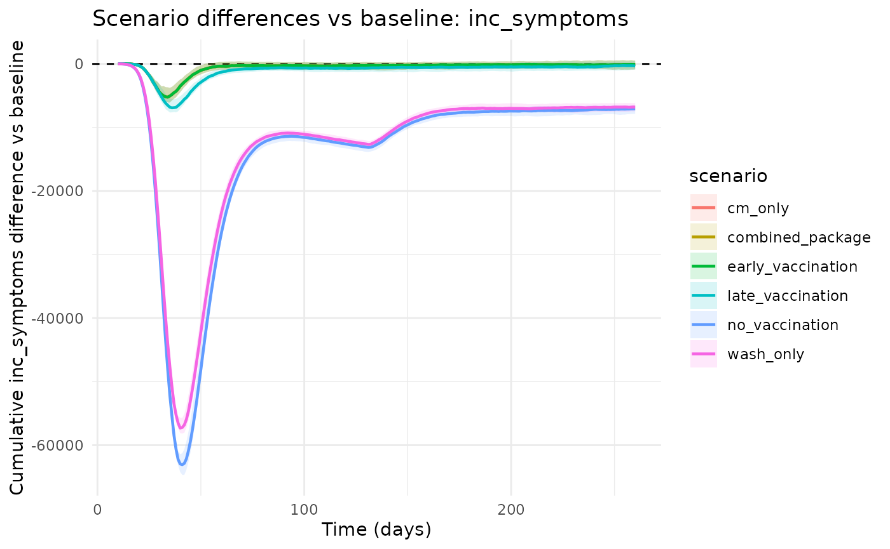
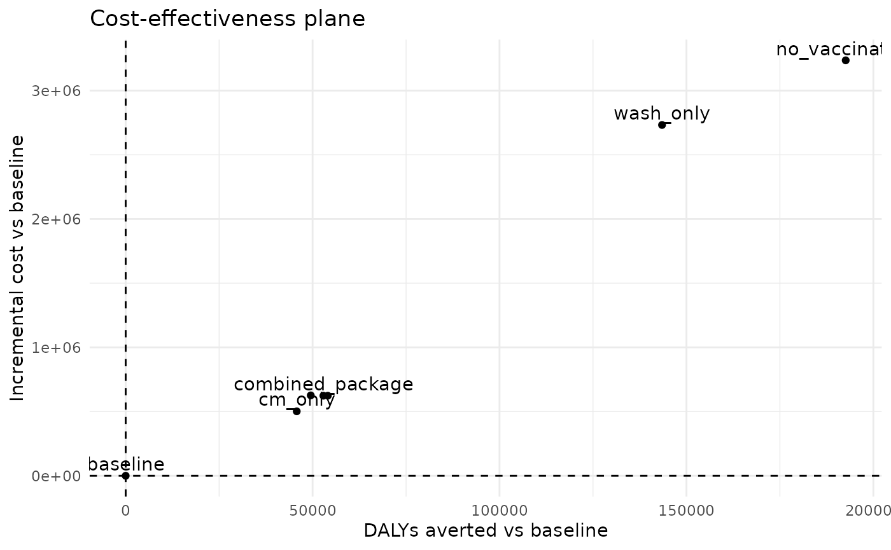

This vignette shows how to construct and compare intervention scenarios.
pars <- cholera_parameters()
time <- 0:60
# Standard operational templates
scenarios <- cholera_standard_scenarios(
pars = pars,
trigger_time = 14,
horizon = max(time),
vax_total_doses = 60000
)
vapply(scenarios, `[[`, character(1), "name")
#> [1] "baseline" "no_vaccination" "early_vaccination"
#> [4] "late_vaccination" "wash_only" "cm_only"
#> [7] "combined_package"
# Simulate
runs <- cholera_run_scenarios(pars, scenarios, time = time, n_particles = 25, dt = 1, seed = 1)
head(runs)
#> scenario time particle S E A M Sev Mu Mt Sevu Sevt Ra Rs V1 V2 Du Dt C
#> 1 baseline 0 1 539998 0 0 0 2 0 0 0 0 0 0 0 0 0 0 0
#> 2 baseline 0 2 539998 0 0 0 2 0 0 0 0 0 0 0 0 0 0 0
#> 3 baseline 0 3 539998 0 0 0 2 0 0 0 0 0 0 0 0 0 0 0
#> 4 baseline 0 4 539998 0 0 0 2 0 0 0 0 0 0 0 0 0 0 0
#> 5 baseline 0 5 539998 0 0 0 2 0 0 0 0 0 0 0 0 0 0 0
#> 6 baseline 0 6 539998 0 0 0 2 0 0 0 0 0 0 0 0 0 0 0
#> inc_infections inc_symptoms inc_deaths inc_vax1 inc_vax2 cum_infections
#> 1 0 0 0 0 0 0
#> 2 0 0 0 0 0 0
#> 3 0 0 0 0 0 0
#> 4 0 0 0 0 0 0
#> 5 0 0 0 0 0 0
#> 6 0 0 0 0 0 0
#> cum_symptoms cum_deaths cum_vax1 cum_vax2 cum_orc_treated cum_ctc_treated
#> 1 0 0 0 0 0 0
#> 2 0 0 0 0 0 0
#> 3 0 0 0 0 0 0
#> 4 0 0 0 0 0 0
#> 5 0 0 0 0 0 0
#> 6 0 0 0 0 0 0
# Summaries and comparisons
summary_tbl <- cholera_scenario_summary(runs, baseline = "baseline")
summary_tbl
#> # A tibble: 7 × 8
#> scenario total_cases total_deaths cases_averted deaths_averted peak_incidence
#> <chr> <dbl> <dbl> <dbl> <dbl> <dbl>
#> 1 baseline 138676. 15569. 0 0 7311.
#> 2 cm_only 138638. 14044. 38.2 1525. 7280.
#> 3 combined… 137803. 13806 873. 1763. 7000.
#> 4 early_va… 137740. 13767. 936. 1802 7032.
#> 5 late_vac… 137630. 13919. 1046. 1650. 7137.
#> 6 no_vacci… 116470. 9152. 22205. 6417. 4437.
#> 7 wash_only 117686. 10789. 20990. 4780. 4478.
#> # ℹ 2 more variables: time_peak <dbl>, time_to_control <dbl>
cmp <- cholera_compare_scenarios(runs, baseline = "baseline", include_econ = TRUE, wtp = 1500)
cmp
#> # A tibble: 7 × 21
#> scenario infections cases_symptomatic deaths doses orc_treated ctc_treated
#> <chr> <dbl> <dbl> <dbl> <dbl> <dbl> <dbl>
#> 1 baseline 566194. 138676. 15569. 0 0 0
#> 2 cm_only 565733. 138638. 14044. 0 16004. 4274.
#> 3 combined_pa… 563674. 137803. 13806 60000 16252. 4263.
#> 4 early_vacci… 563667. 137740. 13767. 60000 16248. 4263.
#> 5 late_vaccin… 562928. 137630. 13919. 60000 16299. 4288.
#> 6 no_vaccinat… 502810. 116470. 9152. 0 17053. 4160.
#> 7 wash_only 505962. 117686. 10789. 0 0 0
#> # ℹ 14 more variables: infections_averted <dbl>, cases_averted <dbl>,
#> # deaths_averted <dbl>, cost <dbl>, dalys <dbl>, cost_diff <dbl>,
#> # dalys_averted <dbl>, icer_cost_per_daly_averted <dbl>,
#> # icer_cost_per_death_averted <dbl>, mean_cost_vax <dbl>,
#> # mean_cost_care <dbl>, mean_cost_wash <dbl>, nmb <dbl>, inmb <dbl>
# High-level report helper
rep <- cholera_scenario_report(runs, baseline = "baseline", include_econ = TRUE, wtp = 1500)
rep$plots$incidence
rep$plots$ce_plane